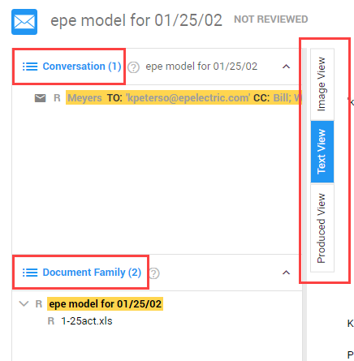
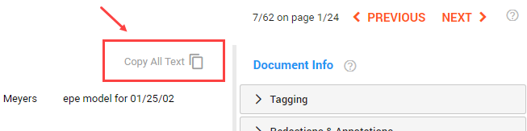
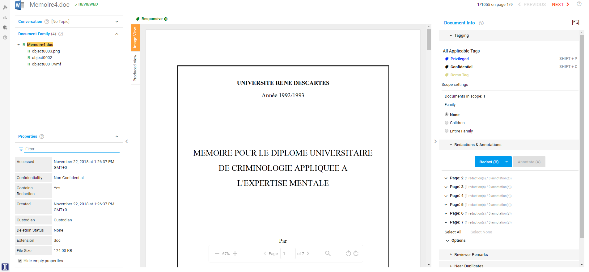
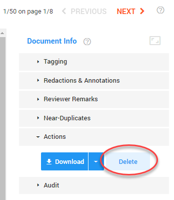
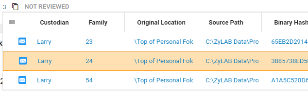
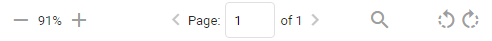

Toggle between Image View/Media View, Text View and Produced View.
Jump to the complete list of documents displayed within the pane Conversation or Document Family by clicking the Document List icon.

Image View
Image View is a close (near native) representation of the original (native) document.
The native file may look differently in the original application in which it was created.
Though you can search on all text in a document, not all hits are visible. When a hit for a search query is found in,
for example, the document properties (metadata) or hidden content of a document,
you will get a warning. In the first example below, you see the difference between the visible hits (468) and the total number of hits on the document (610).
This means that 142 hits are invisible.
In the second example below, hover above
to
see the hidden content types that were found for this document. If detection of hidden content failed, a red icon is shown. Documents without hidden content, appear without this icon.
Tip 1: View hidden content that is not shown in Legal Review, by downloading the native file. Please note that you need permission (sufficient rights) to do so and you need access to the original application.
Tip 2: Produce documents only as images if you want to be sure that search hits found in hidden text are not produced
Media View
Media View shows video or audio files.
Hits are highlighted in the transcribed text..
When enabled, you can view alternative words for some of the transcribed spoken content.
Hits in alternative words are also highlighted.
Please note that searching in the file with Ctrl+F does not work in Media View.
Redactions & Annotations are not available in Media View.
Text View
Text View shows the plain text within the file without hit highlighting.
OCRed text (text extracted from, for example, an image or pdf) and transcripted text is also available here. At the bottom of the file the document properties are added. For example:
All text can be copied with the button Copy All Text. Sections of text can be copied manually with Ctrl+C. Paste the copied text in another environment like Word.

Produced View
Produced view shows you how the current document looks like in a selected production (see Productions).
Redactions & Annotations are not available in Produced View.

Other Options
Customize the layout of the screen.
Aanalyze the document properties.
Assign tags (for example, Responsive or Not Responsive).
Add remarks.
View related documents and add redactions/annotations.
Note: Depending on the permissions you have received, you may not be able to use all options.
Delete Options
A Delete button is added to Document View. Each user that has been assigned a role with the permission 'Delete Documents' can now delete documents in Document View. Go to Actions > Delete.

Before each deletion, you need to confirm. If you delete a parent document, you will delete all child documents too(and thus delete multiple documents at once). If it is a child document, or not related to other documents, you will delete only 1 document.
When the document is deleted, the next document in the queue will be shown. If it was the last document in the queue, you will be redirected to the Document List.
Tip:You do not need to wait until completion of deletion. Just close and navigate to the next document. The document(s) will be deleted anyway.
Duplicates
View number of duplicates (if any) next to document name.
If there are duplicates, select the icon to view the list of duplicates.
Please note that the shown fields are dynamically sorted. This means you will only see the fields that show the differences between the duplicate files.

Navigate from document to document with the buttons Previous and Next. In the example below, you are viewing the 3th out of (in total) 50 documents, which is listed on page 1 of (in total) 2 Document List pages.
Show/hide panels with these arrows:
Resize the document/panels with the vertical beams on the left and right side of the document.
(Un)collapse panels with these arrows:
Increase/decrease Document Info size with or
See bottom of page to zoom in/out, navigate through the pages of the document, Search within the document and/or rotate your document.

Keywords
Searched keyword(s) are highlighted, so the reviewer can focus on that part(s) of the document. The different search highlighting colors are yellow for Keyword Search, custom selected color for Keyword Highlighting, and pink for Search within a Document (Ctrl + F)). It is also possible to search and immediately redact hits. For more information, see Search and Redact.
Download (and, if needed, print) the native or PDF version of your document.


 icon to view the list of duplicates.
icon to view the list of duplicates. 


 or
or